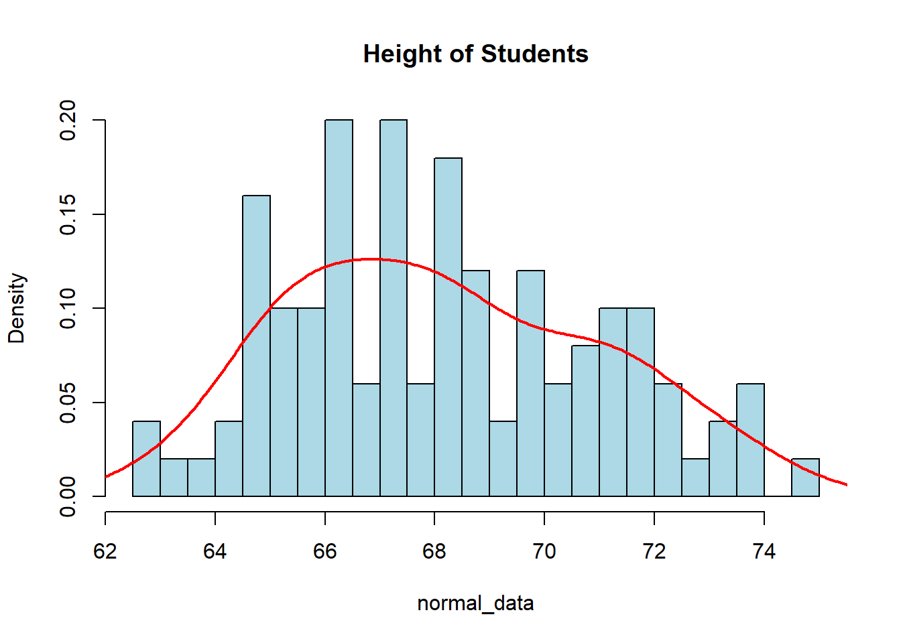

sample(c("Head", "Tail"), 2, replace=TRUE)[1] "Tail" "Tail"sample(c("Head", "Tail"), 2, replace=TRUE)[1] "Head" "Tail"sample(c("Head", "Tail"), 2, replace=TRUE)[1] "Tail" "Head"When it comes to data, it normally follows some pattern. The trouble is trying to identify what the pattern is. There are a few ways we could do this; one way is to try and guess the pattern using specific examples or we could observe large amounts of data to try and find a pattern. The first method will require us to learn about different probability distributions and their properties while the second method will require simulating datasets and looking at the results.
To understand probability distributions, we should probably have a brief review of the topic. Probability is the measure of the likelihood that an event will occur. This likelihood is expressed as a number between 0 and 1, where 0 will indicate impossibility and 1 indicate certainty. The value will always be between 0 and 1 with the sum of probabilities being equal to 1. Some short-hand which you might seen is P(A), which indicates the ``probability of event A occurring”.
If we think about flipping a coin, we might ask what the probability of landing on heads or tails is. We know that there is an equal chance (as long as the coin is fair) of landing on either side, so we will say \(P(H)=0.5\) and \(P(T)=0.5\). But, if we flip the coin two times we will not always get heads and tails 50% of the time (that is 1 head and 1 tail). To see this phenomenon we can carry out a simulation in R.
sample(c("Head", "Tail"), 2, replace=TRUE)[1] "Tail" "Tail"sample(c("Head", "Tail"), 2, replace=TRUE)[1] "Head" "Tail"sample(c("Head", "Tail"), 2, replace=TRUE)[1] "Tail" "Head"We can take this a step further by flipping 10 coins. We would expect to see roughly 5 Heads and 5 Tails, but we would not expect to always see 5 heads and 5 tails. As we can see from the simulation below, we sometimes get only 3 or 4 Heads and the rest Tails. The more observations we have (that is the more coin flips we do) the closer we should be to the expected proportion (50-50). A simulation below produced heads in 30% of the coin flips, but if we flip 10,000 coins we would find it highly unusual to witness heads only 30% of the time, as we expect the proportion of heads to be much closer to 50%.
sample(c("H", "T"), 10, replace=TRUE) [1] "H" "H" "H" "T" "T" "H" "T" "H" "H" "T"sample(c("H", "T"), 10, replace=TRUE) [1] "H" "H" "H" "T" "H" "T" "H" "H" "H" "H"sample(c("H", "T"), 10, replace=TRUE) [1] "H" "T" "H" "T" "T" "T" "T" "H" "H" "H"flip <- sample(c("H", "T"), 10000, replace=TRUE)
table(flip)flip
H T
4998 5002 barplot(table(flip))What would happen though if the coin wasn’t fair and gave us \(P(H)=0.75\)? Then we would expect to get Heads roughly 75% of the time and Tails roughly 25% of the time. To do this simulation in R, we could alter the probabilities of each value in the vector using the prob argument.
unfair <- sample(c("H", "T"), 10000, prob=c(.75,.25), replace=TRUE)
table(unfair)unfair
H T
7401 2599 barplot(table(unfair))The examples we have seen will lead us to the idea of the Bernoulli Distribution. For this probability distribution, the results are either Success (1) or Failure (0). The probability of success is usually denoted by \(p\) with the probability of failure being \(q=1-p\). The probability distribution function can be written as: \[ P(X=k) = p^k (1-p)^{1-k}\]
where \(k=1\) means success and \(k=0\) means failure. Other things to note about this distribution are that the mean will be \(\mu=p\) (note: \(\mu\) represents the population mean and is pronounced “mew”) and the standard deviation will be \(\sigma= \sqrt{p(1-p)}\). (note: \(\sigma\) represents the population standard deviation is the pronounced “sigma”).
The Bernoulli distribution will only concern itself with a single outcome, but what if we are instead interested in flipping a coin 10 times and counting the number of heads that occur? We have already seen that we would expect roughly 5 heads, but it will not always be exact. To model this problem, we could do some simulations in R again. For this problem, I will instead use 1 (to represent Heads) and 0 (to represent Tails) as well as using the matrix() function and apply() function.
The matrix() function will allow us to fill in a matrix with values from our sample. We will indicate the number of rows we want in the matrix and it will figure out how many columns are needed to accommodate all of the data we give it. We should be aware though that it will start repeating the data if we do not pass it enough data to complete the rectangular matrix. In the example below, we can see how it will fill in the matrix if we pass it 10 values and indicate we only want 3 rows:
matrix(1:10, nrow=3)Warning in matrix(1:10, nrow = 3): data length [10] is not a sub-multiple or
multiple of the number of rows [3] [,1] [,2] [,3] [,4]
[1,] 1 4 7 10
[2,] 2 5 8 1
[3,] 3 6 9 2The apply() function will allow us to apply a function on a matrix in R. To use this function, we will need to pass it a matrix and indicate if we want to do the function across the rows (MARGIN=1) or the columns (MARGIN=2). Finally, we do have to pass it a function to carry out (like mean, sum, sd, etc.).
x_mat <- matrix(1:10, nrow=3)Warning in matrix(1:10, nrow = 3): data length [10] is not a sub-multiple or
multiple of the number of rows [3]apply(x_mat, MARGIN=1, sum) # Calculating the sum for each row[1] 22 16 20apply(x_mat, MARGIN=2, sum) # Calculating the sum for each column[1] 6 15 24 13I encourage you to play around with the matrix() and apply() functions to get a sense of how they work since we will be using them to do simulations in R quite a bit.
In the simulation below, we are flipping 10 coins (columns), writing down the results, and repeating this process a total of 12 times (rows). We then count the number of heads that occur in each row. Visualizing it as a table allows us to see the number of times each result occurred. We can see that we occasionally got 7 Heads, but the majority of the time we had close to 5 Heads.
flips <- matrix(sample(c(1, 0), 10*12, replace=TRUE), nrow=12)
flips [,1] [,2] [,3] [,4] [,5] [,6] [,7] [,8] [,9] [,10]
[1,] 0 1 1 1 1 0 1 1 0 0
[2,] 1 1 0 1 1 1 0 1 0 1
[3,] 1 1 1 1 1 1 0 1 0 0
[4,] 1 1 0 1 0 1 1 1 0 0
[5,] 1 1 1 1 0 1 0 0 0 0
[6,] 1 1 1 0 0 1 1 1 0 0
[7,] 0 1 0 1 1 0 0 1 0 1
[8,] 1 0 1 0 0 0 0 1 0 1
[9,] 0 1 1 1 1 1 1 0 0 0
[10,] 1 0 0 1 1 1 0 0 1 0
[11,] 0 1 1 0 0 1 0 0 1 0
[12,] 1 0 1 0 0 1 1 0 0 0nheads <- apply(flips, MARGIN=1, FUN=sum)
nheads [1] 6 7 7 6 5 6 5 4 6 5 4 4table(nheads) # Results of flipping 10 coins 12 timesnheads
4 5 6 7
3 3 4 2 barplot(table(factor(nheads, levels=0:10)))Instead of just doing it 12 times, what if we did it 100 times or even 10,000 times? How might our counts and barplot look?
number_of_times <- 100
flips <- matrix(sample(c(1, 0), 10*number_of_times, replace=TRUE), nrow=number_of_times)
nheads <- apply(flips, MARGIN=1, FUN=sum)
table(nheads) # Results of flipping 10 coins 100 timesnheads
1 2 3 4 5 6 7 8 9
1 8 12 16 28 19 10 4 2 barplot(table(factor(nheads, levels=0:10)))number_of_times <- 10000
flips <- matrix(sample(c(1, 0), 10*number_of_times, replace=TRUE), nrow=number_of_times)
nheads <- apply(flips, MARGIN=1, FUN=sum)
table(nheads) # Results of flipping 10 coins 100 timesnheads
0 1 2 3 4 5 6 7 8 9 10
15 90 404 1186 2068 2458 2036 1184 440 106 13 barplot(table(factor(nheads, levels=0:10)))In the simulations, the individual flips are represented by the Bernoulli distribution (success or failure). The sequence of flipping to coin 10 times is known as a Bernoulli trial. The Binomial Distribution represents the number of successes in \(n\) Bernoulli trials. Notice that when \(n=1\) we have a Bernoulli Distribution. The probability distribution function can be written as:
\[ \text{P(X=k)}={n\choose k}p^k(1-p)^{n-k}=\frac{n!}{(n-k)!k!}p^kq^{n-k}\]
where \(n\) is the number of trials, \(k\) is the number of successes, and \(p\) is the probability of success. Other things to note about this distribution are that the mean will be \(\mu=np\) and the standard deviation will be \(\sigma=\sqrt{np(1-p)}\).
Now that we know a few different probability distribution functions, we should probably discuss the 2 main ways we can calculate probabilities. The first way is to calculate it theoretically if we know the underlying distribution. To do this, we would need to evaluate the probability distribution function at the desired value. If we do not, then we can calculate it empirically if we have a large number of observations available to us. To do this, we will simply see the proportion of values that meet the desired criteria.
Take the following example: If we were to flip a coin 10 times, what is the probability that we would end up with exactly 4 heads? This is a Binomial Distribution with \(n=10\) and \(p=0.5\), which is can be written as Bin(10,0.5), so:
\[ \text{P(X=4)}={10\choose 4}0.5^4(1-0.5)^{10-4}\approx 0.2050781 \]
choose(10,4)*0.5^4*(1-0.5)^(10-4)[1] 0.2050781factorial(10)/(factorial(6)*factorial(4))*0.5^4*0.5^6[1] 0.2050781This is called the Theoretical Probability since we know what the distribution is for our question. If we did not know what the probability distribution was then we can always simulate it similarly to what we did above. For this, we simulated 10,000 10-flip trials and counted the number of heads in each trial:
table(nheads)nheads
0 1 2 3 4 5 6 7 8 9 10
15 90 404 1186 2068 2458 2036 1184 440 106 13 2068/10000[1] 0.2068This is called the Empirical Probability since we have a large number of observations. We can see that the proportion of 4 heads is roughly 0.2068 when we ran it 10,000 times. Notice this is very close to our theoretical probability! We can do something similar if our coin is not fair. For instance, if we flip 10 coins 10,000 times when the probability of heads was 0.75 then we might get results that look like this:
n <- 10000 # number of times flipping the 10 coins
flips <- matrix(sample(c(1, 0), 10*n, replace=TRUE, prob=c(0.75, 0.25)), nrow=n)
nheads <- apply(flips, MARGIN=1, FUN=sum)
table(nheads)nheads
2 3 4 5 6 7 8 9 10
1 24 182 549 1445 2476 2846 1919 558 We can then calculate the probability of getting exactly 4 heads both theoretically and empirically. We will notice that the empirical probability gives us a good estimation as long as we carry out a large number of simulations.
choose(10,4)*0.75^4*(1-0.75)^6[1] 0.016222182/10000[1] 0.0182Instead of flipping a coin, what if we instead rolled a standard die? We might ask ourselves: what the probability is of getting a 1? What about a 2 or a 3? It is fairly easy to calculate these probabilities theoretically since there are 6 sides on a die with each being equally likely. This gives us a probability of \(\frac{1}{6}\) for each event. We can also run a simulation to determine the probability:
sample(1:6, 10, replace=TRUE) [1] 3 3 6 4 6 4 3 1 4 6sample(1:6, 10, replace=TRUE) [1] 5 3 1 4 5 1 3 5 5 6We can then count the number of times each event occurs and visualize it with a barplot.
x <- sample(1:6, 10, replace=TRUE)
x <- factor(x, levels=1:6)
table(x)x
1 2 3 4 5 6
2 5 1 1 0 1 barplot(table(x))Notice how in the visualization above each outcome is not equally represented. This is because when our sample size is small it will not necessarily look like what we expect, but as the sample size increases it looks closer and closer to the theoretical probability. To see this we can visualize rolling 50 dice or even 10,000 dice:
x <- sample(1:6, 50, replace=TRUE)
table(x)x
1 2 3 4 5 6
7 15 10 6 4 8 barplot(table(x))x <- sample(1:6, 10000, replace=TRUE)
table(x)x
1 2 3 4 5 6
1628 1668 1685 1656 1629 1734 barplot(table(x))If all outcomes have an equal chance of occurring then the probability is identical (uniform) for all possible outcomes. It can be modeled using a Uniform Discrete Distribution. The probability distribution can be described as:
\[ P(X=k)=\frac{1}{n}\]
where \(n\) is the number of possible outcomes. For this distribution, the mean will be \(\mu=\frac{a+b}{2}\) (where \(a\) and \(b\) are the “end-points”) and the standard deviation will be \(\sigma=\sqrt{\frac{n^2-1}{12}}\). We will only really have to deal with these if our outcomes are quantitative and sequential (or at least evenly separated).
The last discrete probability distribution we want to discuss is the Poisson Distribution. This distribution will give us the probability of a given number of events occurring in a fixed time interval. This will only apply if the events occur at a constant rate \(\lambda\) (pronounced “lambda”) and the events are independent of each other (meaning one occurrence does not affect another occurrence). The probability distribution can be described as: \[ \text{P(X=k)}=\frac{\lambda^ke^{-\lambda}}{k!}\]
with \(e\) being the mathematical constant \(2.71828\dots\). Some properties of this distribution are that the mean is \(\mu=\lambda\) and the standard deviation is \(\sigma = \sqrt{\lambda}\).
To create simulations for this distribution in R, we will use the rpois() function which generate random values from the Poisson distribution. Similar functions exist for other distributions as well (such as rbinom() for random values from a binomial distribution). Additional functions will allow us to calculate theoretical probabilities in R using \(p\) instead of \(r\) at the front of the function. We will discuss these in more detail during future lectures.
Let’s consider the following example: A considerable amount of 18-Wheelers drive down Emmitsburg’s Main Street each day. If they come through at a rate of 2 per 15 minutes, what would we expect to see the distribution look like? What happens if the rate changes to 5 per 15 minutes?
x <- rpois(10000,lambda=2) # Random values assuming 2 per 15-minutes
table(x)x
0 1 2 3 4 5 6 7 8 9
1336 2743 2676 1778 948 364 120 24 8 3 barplot(table(x))x <- rpois(10000,lambda=5) # Random values assuming 5 per 15-minutes
table(x)x
0 1 2 3 4 5 6 7 8 9 10 11 12 13 14 15
64 356 864 1417 1745 1764 1457 1033 632 366 153 94 35 14 4 1
16
1 barplot(table(x))Altering the lambda will affect the distribution’s shape. Below shows a few different lambdas along with how the distribution will look
Going back to the example, we can calculate the probability the 4 trucks drive through town if the rate is 5 per 15 minutes. This can be done both theoretically (the top example) and empirically (the bottom example):
(5^4 * exp(-5))/factorial(4)[1] 0.17546741745/10000[1] 0.1745We could also find the Probability of seeing less than or equal to 4 18-Wheelers:
sum(x<=4)/10000[1] 0.4446Since we are coming to the end of the lecture on discrete probability distributions, we should probably cover a few definitions that will pop up throughout the rest of the course. The first is the difference between a population and a sample. A population is the entire collection of possible values for a measured observation, while a sample is just the subset of the population that we collect. For instance, if you are interested in the number of siblings all college students have then your population would be all college students while your sample is just the students you get data on.
The next definition we should discuss is a random variable. A random variable is the value of an observation determined by a chance event. For instance, rolling a die or flipping a coin would be a random variable. A Frequency Distribution is the frequency of a random variable occurring at all observed values. This will help us calculate empirical probabilities and is an approximation for the population distribution.
Lastly, we have seen throughout this lecture that as we increase the sample size, the visualization looks closer and closer to what we would expect. This is due to the Law of Large Numbers, which states that as our sample gets larger and larger, the relative frequencies will converge to the probability from the population distribution.
Last in this chapter we discussed some Discrete Distributions and were able to calculate the probability that a single event occurred. We can do a similar idea with continuous data except that instead of calculating \(P(X=a)\), we will be calculating the probability of falling within a range of values such as \(P(X<a)\) or \(P(a\leq X \leq b)\). This should hopefully make sense as continuous data can take on any value in a given interval, so the probability that our backpack weighs exactly 6.4939 pounds is 0 since this is only 1 value with an infinite amount of possibilities if the scale can be infinitely precise. For the students who have taken calculus before, we (should) know that the integral at a single point, that is \(\int_a^a f(x)\ dx\), is 0.
The first distribution we will discuss is the Uniform Continuous Distribution. Similar to the Uniform Discrete Distribution, all possibilities within the interval \([a,b]\) have the same chance of being selected. The visualization of this distribution is essentially “flat” across the specified interval. The Uniform Continuous distribution can be described by the probability distribution \(f(x)=\frac{1}{b-a}\) when \(a\leq x \leq b\) and \(f(x)=0\) otherwise. The mean will be \(\mu=\frac{b+a}{2}\) and the standard deviation will be \(\sigma = \sqrt{\frac{(b-a)^2}{12}}\)\
Uniform Distributions occur when all of the ranges of outputs are equally likely. People’s heights typically are not uniformly distributed (as most people are around 68 inches tall, with a few really short people and a few tall people). But, if we look at the decimal values of the height (for a person 68.283 inches tall if we just use the .283 portion) then that would be uniformly distributed. This idea of a continuous Uniform distribution is also seen in Random Number Generators, which are vital in simulations and computer applications!
The code to simulate a uniform continuous distribution in R is fairly straightforward. We will use the runif() function which requires us to specify the number of random uniform numbers. We can also specify the minimum and maximum values for the digits. If we do not specify this then it will return values between 0 and 1. To view discrete data we used a barplot, but if we want to view the continuous data then we should utilize a histogram using the hist() function.
runif(5)[1] 0.3039341 0.3271780 0.9936374 0.7228282 0.8854631runif(5, min=13, max=15)[1] 13.20895 14.21335 13.97186 13.69464 14.81628uniform_data <- runif(100, min=0, max=1)
hist(uniform_data, col="lightblue", main="Uniform Distribution",
breaks=20, freq = FALSE)
Now we might not have gotten a very Uniform looking visualization with the code above, and that is because our sample of size 100 is relatively small. The Law of Large Numbers tells us that as our sample grows larger and larger, our distribution will get closer and closer to the expected population distribution. So now try running the same code but change the sample size from 100 to 100,000 and see how it looks more uniform.
uniform_data <- runif(100000, min=0, max=1)
hist(uniform_data, col="lightblue", main="Uniform Distribution",
breaks=20, freq = FALSE)The Gamma Distribution is another continuous distribution that has important aspects in the world of Data Science. This distribution has values that are always positive and right-skewed (meaning we have an outlier on the right side, making the “tail” longer). This distribution is particularly useful in describing the time until the \(n^{\text{th}}\) Poisson event. We will not worry about ``math” of the function, but we will note that the curve is defined by shape \(k\) and scale \(\theta\). The mean will end up being \(\mu=k\theta\) and the standard deviation will be \(\sigma=\sqrt{k\theta^2}\)
We should note that this distribution can be used for any data which we anticipate will be skewed, and does not have to deal with just the time until the \(n^{\text{th}}\) Poisson event. To simulate random values for a gamma distribution we will use the rgamma() function where we can specify the number of values we want along with the shape, and either the scale or rate (sometimes we might also mention rate which is 1/scale). The visualization below shows what the distribution may look like. A density line has been drawn over the top of the histogram to help visualize the distribution.
gamma_data <- rgamma(50, shape=2.5, scale=20000)
hist(gamma_data, col="lightblue", main="Salary of Population",
freq=FALSE)
lines(density(gamma_data), col="red", lwd=2)Every time you run the code above you may get vastly different-looking graphs, which is due to the small sample size of our data. The Law of Large Numbers (wow…second time it has been mentioned, it must be important…) tells us that we need a large sample for it to look like a “smooth” distribution. If we have a relatively small sample then we cannot guarantee it will look “nice”. The visualization below shows how the shape and scale affect the look of the distribution:
The Exponential Distribution is going to be similar to the Gamma Distribution with one slight caveat, it is the time between Poisson events and not the time until the \(n^{\text{th}}\) event. This is often referred to as a memory-less distribution as we start over each time we see an observation and count the time til the next one. So, the Exponential Distribution is a special case of the Gamma distribution when the shape is 1 and the scale is \(\frac{1}{\lambda}\). The mean and standard deviation for this distribution will be \(\mu=\sigma=\frac{1}{\lambda}\).
This is useful when we are interested in determining the arrival time between events. If we go back to our example of 18-wheelers driving down Main Street at a rate of 4 per 15 minutes, we can determine the time between the 18-wheelers coming through the city.
exp_data <- rexp(50, rate=4)
hist(exp_data, col="lightblue", main="Exponential Distribution",
xlab="Time Between 18-Wheelers", breaks=20, freq=FALSE)
lines(density(exp_data), col="red")Once again, this probably does not look very nice or smooth as we have relatively few pieces of data visualized. I encourage you to try the code above again but this time change the number of observations in the sample from 50 to 5,000 and see how different it looks. We could also rewrite the rate to alter the units. Currently, it is 4 per 15 minutes, but we could also have it as \(4\times4=16\) for 16 every hour or even \(4/15\) for the amount per minute. This would change the units on the x-axis to whatever units the rate is in.
exp_data <- rexp(1000, rate=4/15)
hist(exp_data, col="lightblue", main="Exponential Distribution",
xlab="Time Between 18-Wheelers", breaks=20, freq=FALSE)
lines(density(exp_data), col="red")We will see that many characteristics in nature follow what we call the Normal Distribution. This is a uni-modal (one hump) symmetric distribution centered around the mean with the shape dependent on the standard deviation. You have probably heard people refer to the “bell” curve before since it tends to resemble the shape of a bell. Characteristics such as heights, grades, stock market returns, blood pressure, and many more things follow this distribution. It can be described by its mean \(\mu\) and the standard deviation \(\sigma\), both of which are arguments that we can decide.
This is one of the most important distributions in statistics, as we will be revisiting this distribution continually throughout the rest of the semester. Later on, we will see why it is so important and how it relates to arguably one of the Top 3 Most Influential Theorems (the Central Limit Theorem). We can see the distribution at work if we want to look at the average height of students. We will assume the average height is 68 inches while the standard deviation is 3 inches.
normal_data <- rnorm(100, mean=68, sd=3)
hist(normal_data, col="lightblue", main="Height of Students",
breaks=20, freq=FALSE)
lines(density(normal_data), col="red", lwd=2)
Once again, if we increase the sample size, it will look more and more smooth due to the Law of Large Numbers (another very important and influential theorem). There are a lot of neat properties that come from the Normal Distribution, one of which is called the 68-95-99.7 Rule. This states that roughly 68% of our data falls within 1 standard deviation of the mean, 95% of our data falls within 2 standard deviations of the mean, and 99.7% of our data falls within 3 standard deviations of the mean.
Given the normally distributed data that we created above, we could test this idea and see if the 68-95-99.7 Rule does hold up. The following code is an example of how we may see it. Note that you may get different results due to the fact you will be generating a different random sample than I have. I will increase the sample size to 1000 to get more accurate results.
normal_data <- rnorm(1000, mean=68, sd=3)
mean(normal_data)[1] 68.0472sd(normal_data)[1] 3.007hist(normal_data, col="lightblue", main="Height of Students",
breaks=20, freq=FALSE)
lines(density(normal_data), col="red")sum(normal_data > mean(normal_data) - sd(normal_data) &
normal_data < mean(normal_data) + sd(normal_data))/1000[1] 0.706sum(normal_data > mean(normal_data) - 2*sd(normal_data) &
normal_data < mean(normal_data) + 2*sd(normal_data))/1000[1] 0.947So with this, we can see that the 68-95-99.7 rule is pretty accurate in telling us what percentage of the data is within so many standard deviations of the mean. You should get similar, but slightly different results. The more data in your sample the closer you will be to the true proportion.